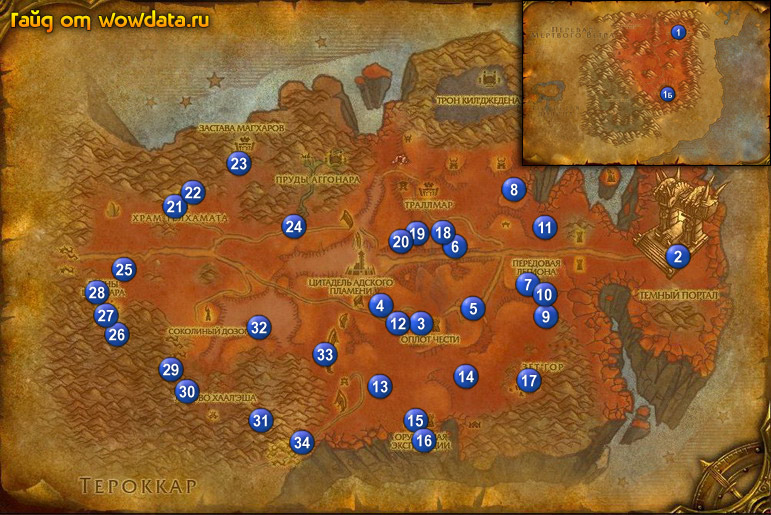

1) Вам рекомендуется быть 59 – 60 лвл, чтобы без проблем справляться с мобами. Первым делом вы должны знать что вам понадобится [Горькая настойка Стражей Пустоты] который вы можете купить в 1 (64, 17). Далее идите начните <Через Темный портал> у портала в Выжженных землях.
2) Войдите в портал 1Б.
3) Закончите <Через Темный портал> 2 (87, 51), начните <Прибытие в Запределье>.
4) У мастера грифонов 2 (87, 52) закончите <Прибытие в Запределье>, начните <Путешествие в Оплот Чести> и летите в Оплот Чести.
5) Когда прилетите найдите Маршал Исилдор 3
(55, 63), закончите у него <Путешествие в Оплот Чести>, начните <Боевой командир Данат>.
6) Идите в гостиницу 3 (55, 64), сделайте Оплот Чести вашим домом, купите еды и воды нового вида.
7) Идите в замок, поднемитесь наверх, закончите <Боевой командир Данат>, затем начните <Возрожденный Легион> и <Узнай врага в лицо!>.
8) Идите по дороге на запад от Оплот Чести до башни 4 (50, 60), закончите <Узнай врага в лицо!>, начните <Падальщики орков Скверны>, затем снаружи начните <Ничто не пропадет даром>.
9) Идите на восток от Оплот Чести 5 (61, 60) и закончите <Возрожденный Легион>, начните <Путь Страданий>.
10) Делайте <Ничто не пропадет даром> 6 (59, 49). Также бейте Орк из клана Костеглодов сдесь для <Падальщики орков Скверны>.
11) Идите на юг 7 (68, 56) или на северо-восток 8 (66, 36) и бейте мобов для <Путь Страданий>.
12) Идите закончите <Путь Страданий> 5 (61, 60), начните <Лагерь экспедиции>. Затем идите закончите его 9 (71, 62) и начните <Лишить Легион подкрепления!>, далее бейте демонов 10 (71, 57), и
11 (71, 45) пока не соберете 8 [Камень с рунами Демонов], затем используйте [Запалы Кингстона] чтобы открыть 2 портала: 10 (72, 58) и 7 (71, 55).
13) Вернитесь назад 9 (71, 62) и закончите квест. Начните <Задание: Врата Муркет и Шаадраз>.
14) Повернитесь к Командир звена Даби'ри, поговорите с ним и летите бомбить башни. Когда полетите достанте из пака на хот кей бомбу, вы должны разбомбить 2 портала, когда успешно выполните миссию закончите квест. Затем начните <Застава-на-Обломках> и поговорите с Командир звена Даби'ри, после чего вы снова полетите на грифоне.
15) Когда прилетите откройте пункт полета и закончите <Застава-на-Обломках>, затем начните <Командир звена Грифонгар>, далее идите в башню и закончите его. Тут же начните <Задание: Косогор Бездны>. <Отправка на фронт>. Теперь идите поговорите с Грифоньер Ветрорёв и летите в Косогор Бездны. Летите бомбить мобов пока не разбомбите всех. Когда закончите бомбежку вернитесь в башню и закончите <Задание: Косогор Бездны>, начните <Отправка на фронт>.
16) Теперь вернитесь к Грифоньер Ветрорёв, вы можете начать и сделать <Возвращение на Косогор Бездны> – квест для репутации. Теперь летите в Пик Чести.
17) Закончите <Отправка на фронт>.
18) Летите назад в Парящая застава и там возмите грифона до Оплот Чести или вернитесь туда по руне.
19) В гостинице начните <Длиннобородые> у хозяина таверны (на 58 не дают), затем рядом начните <Старый дар>.
20 Идите в замок, начните <Путь Славы> на верху у дренея. Рядом начните <Ослабить оборону валов> квест на Цитадель Адского Пламени: Бастионы Адского Пламени которая в инсте (на 58 лвл не дают).
21) Прапорщик Трейси Праудвелл 3 (56, 63) дает квест на захват 3 башен в этой зоне. Вы будете получать тут новые [Почетный знак Оплота Чести]. Грубо –квест на репу.
22) Выйдите из Оплот Чести, идите на запад до башни, там закончите <Ничто не пропадет даром>, начните <Сжечь старье!>. Внутри закончите <Падальщики орков Скверны>, начните <Дурные предзнаменования>, затем слева начните <Непреклонные духи>.
23) Выйдите из башни, поверните на право и идите пока не увидите вход в пещеру. Начните <Весь рудник ходуном> 12 (52, 63) и <Работа для сообразительных>, теперь идите в пещеру и начинайте бить Ган'арг-сапер для <Весь рудник ходуном>. Когда набъете мобов, выйдите из пещеры, закончите квест и начните <Мозговой центр>, затем идите в глубь пещеры и убейте З'крел. Выйдите из пещеры и закончите квест.
24) Когда вы закончите этот квест, репутация с Оплот Чести должна стать дружественной.
25) Идите на юг юго-запад, вы увидите на земле некую активность, когда вы туда подойдете из земли вылезет червь, вам надо убить 15 таких червей для <Работа для сообразительных>. Из них может выпасть [Подпорченный кожаный чехол] которая начинает <Потерянное послание>.
26) Бегите вниз к 13 (49, 75) начните <Сбор яиц опустошителей> и <В случае чрезвычайной ситуации...>, Теперь вы должны собрать 30 деталей цепелина которые валяются везде, 14 (61, 73) – там больше всего.
27) Идите вниз к 15 (54, 82), бейте мобов таких прозрачных (рыцарей) для <Непреклонные духи>. Вы найдете для <Старый дар> 16 (54, 86).
28) Идите в 17 (68, 75) и бейте орков пока не выпадет [Проклятый талисман] для <Дурные предзнаменования>, вам не обязательно топать в Зет'Гор, талисман так же может выпасти и за пределами города.
29) Когда получите талисман идите на восток 9 (70, 63), закончите квест и начните <Проклятые талисманы>.
30) К этому квесту вернемся позднее.
31) Делайте <Путь Славы> на дороге ведущей от . Чтобы обнаружить кости можно просто водить мышкой по дороге пока не увидите значек использования.
32) Севернее Путь Славы вы увидите линию катапульт и орков. делайте <Сжечь старье!> : первая 18 (58, 46) вторая 19 (55, 46) третья 19 (53, 47) четвёртая 20 (52, 47). Чтобы уничтожить катапульту просто используйте факел из вашего инвентаря около катапульты.
33) Идите к башне 4 (51, 60) закончите <Сжечь старье!>, затем внутри закончите <Непреклонные духи>, начните <Солдатская верность>.
34) Выйдите из башни и справа от нее 12 (52, 63) закончите <Работа для сообразительных>.
35) Идите в Оплот Чести, в гостинице закончите <Старый дар>, затем покинте гостиницу и идите в замок, в замке на верху закончите <Путь Славы>, начните <Храм Телхамата>.
36) У вас должно быть 50% на лвл или около того.
37) Покинте Оплот Чести и идите на северо-запад в Храм Телхамата 21 (23, 40).
38) Начните <Смертельно опасные хищники>, <Безжалостные десятники> и <Найти Седаи>, пропустите <Матриарх камнедеров>. Если вы пришли в Запределье до 60 лвл и досих пор его не набрали, то эти квесты вам будут недоступны.
39) Выучите тут умение первой помощи выше 300. Идите в гостиницу и закончите <Храм Телхамата>, начните <Пруды Аггонара> и сделайте это место вашим домом.
40) Откройте пункт полета 22 (25, 37).
41) Идите на восток от птичника 22 (26, 37), вы увидите Тело Седаи, кликните по нему и закончите <Найти Седаи>, начните <Возвращение к Обадии>.
42) Бегите обратно в город и закончите <Возвращение к Обадии>, начните <Месть Макуру>.
43) Идите к 23 (31, 31) и бейте орков пока не соберете 10 ожерелий для <Месть Макуру>.
44) Идите на восток к Пруды Аггонара, прыгайте в низ и бейте Нарывный гнилостень 24 (38, 44) и Исчадие ужаса для <Пруды Аггонара>.
45) Вернитесь по руне в Храм Телхамата и идите закончите <Месть Макуру>, начните <Искупление>, теперь бегите в гостиницу закончите <Пруды Аггонара>, начните <Очищение вод>, закончите <Искупление> и начните <Реликвии Шанаара>.
46) бегите на юго-запад к Застава Ценариона, закончите <Потерянное послание> 25 (16, 52).
47) Бегите на бг к Руины Ша'наара убивайте Иллидарский надсмотрщик для <Безжалостные десятники>. У них есть два 58 охранника, но как толко вы убиваете Иллидарский надсмотрщик они становятся дружелюбными. Так же собирайте [Реликвия Ша'наара] для <Реликвии Шанаара>.
48) Начните <Предатель среди нас> 26 (16, 65), теперь вернитесь и возмите ключ в сундуке 27 (14, 63), вернитесь и закончите квест. Начните <Старейшины Отбросья>, идите вниз: Мород Ветродув 27 (13, 60), Айлаан Пробуждающий Воду под тентом 28 (13, 58), Акору Призыватель Огня 28 (15, 58). Вернитесь назад 26 (16, 65) и закончите квест. Начните <Наследие Азрета>, идите найдите 63 элитного демона, с помощью посоха который вам дали уберите статус «элитный» и убейте его, потом вернитесь назад и закончите <Наследие Азрета>.
49) Идите на юго-восток 29 (23, 72), репутация с Оплот Чести должна быть уже дружественной закончите <Длиннобородые>, начните <Угроза Араккоа>, <Разъяренные Опустошители> и <Доверие Миррена>, закончите его и начните <Прекрасное оперение>.
50) На северо-западе убейте 10 Перозубый опустошитель для <Разъяренные Опустошители>, затем вернитесь назад в 29 (23, 72) и закончите его.
51) Идите на юго-восток от лагеря убейте 6 Когтестраж Хаал'еша и 4 Ветроход Хаал'еша для <Угроза Араккоа>, также высматривайте Гнездо Калири иМолодая самка калири Молодой самец калири из которых падают перья для
<Прекрасное оперение>. Убейте Авруу 30 (25, 76) найти его не сложно, из него падает [Сфера Авруу] который начинает <Сфера Авруу>.
52) Бегите в 31 (34, 82) и закончите <Прекрасное оперение> и <Угроза Араккоа>.
53) Идите по направлению к пещере 32 (34, 63), по пути вам встретится много мобов для <Смертельно опасные хищники>.
54) Когда закончите вы должны выйти из ущелья в районе 33 (42, 68).
55) Идите вниз на юго-запад в 34 (39, 86) и начниайте убивать мобов и собирать [Яйцо опустошителя] для <Сбор яиц опустошителей>.
56) Идите на северо-восток в 13 (49, 75), закончите <Сбор яиц опустошителей>, начните <Зловепрь – тоже мясо>, а так же закончите <В случае чрезвычайной ситуации...> и начните <Дикие демоны Бездны>.
57) Сейчас вы должны быть 61 лвл или очень билзко к нему.